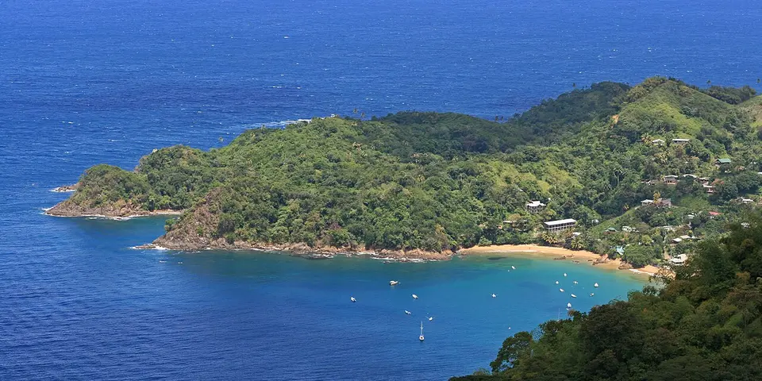

Central America & Caribbean
Trinidad and Tobago on a budget
Trinidad's Carnival and doubles street food, then Tobago's quiet reefs, rainforest and beaches, a Caribbean trip with more local life than resorts.
Photo: cheesy 42, CC BY 2.0, via Wikimedia Commons
.jpg){kind=link}
Classic route
Port of Spain for carnival, then Tobago. 10 days.
Plan a trip to Trinidad and Tobago
Before you go
Flights to Port of Spain: Skyscanner · Kiwi.com · Google Flights
Hostels and guesthouses in Port of Spain · Tobago · Maracas Bay · Asa Wright Nature Centre
Tours and tickets: Port of Spain · Tobago
Mobile data: Trinidad and Tobago eSIM
Travel insurance: SafetyWing
How much 8 places in Trinidad and Tobago cost
Daily budgets per person in US dollars: a hostel dorm or simple guesthouse, local food, local transport and the usual entry fees.
-
Port of Spain
The Caribbean's biggest Carnival, steelpan yards and street food like doubles, roti and bake and shark at Maracas Bay.
Bed $30 · Food $12 · Getting around $4 · Extras $4
Budget tip: Carnival prices triple; book months ahead. The rest of the year, doubles from roadside vendors make a cheap, filling breakfast.
$50per day -
Tobago
Snorkel Buccoo Reef, hike the Main Ridge rainforest reserve and laze on the white sand of Pigeon Point.
Bed $30 · Food $14 · Getting around $5 · Extras $6
Budget tip: Turtles nest on Tobago's beaches from March to August. Guesthouses around Crown Point are cheaper than resorts.
$55per day -
Maracas Bay
A curved golden beach below the green Northern Range, famous for bake and shark sandwiches piled with sauces.
Bed $30 · Food $12 · Getting around $6 · Extras $3
Budget tip: Go on a weekday when it is quiet. Shared taxis leave from Port of Spain and cost far less than a tour.
$51per day -
Asa Wright Nature Centre
Rainforest birding in the Arima Valley, with hummingbirds buzzing the feeders and oilbirds roosting in a nearby cave.
Bed $40 · Food $14 · Getting around $8 · Extras $15
Budget tip: Visit as a day trip from Port of Spain, since the lodge is expensive. Arrive early for the most bird activity.
$77per day -
Pitch Lake
Walk across the world's largest natural asphalt lake at La Brea, a strange, bubbling black surface dotted with warm pools.
Bed $30 · Food $12 · Getting around $6 · Extras $6
Budget tip: Use the official guides from the visitor center. Wear shoes you do not mind getting dirty.
$54per day -
Castara
Small Tobago fishing village where fishermen haul seine nets onto the sand at dawn, with reef snorkeling and waterfall walks in the hills.
Bed $32 · Food $14 · Getting around $6 · Extras $4
Budget tip: Eat at local beach shacks and cook with fresh fish from the beach; local buses link to Scarborough.
$56per day -
Grande Riviere
A remote north-coast beach where giant leatherback turtles haul ashore to nest from March to August.
Bed $35 · Food $12 · Getting around $8 · Extras $6
Budget tip: Turtle watching in season needs a permit, which local guides arrange. Village guesthouses are simple and cheap.
$61per day -
Caroni Swamp
Mangrove wetland where flocks of scarlet ibis return to roost at sunset, seen from small boats.
Bed $30 · Food $12 · Getting around $6 · Extras $15
Budget tip: Book an evening boat tour directly at the swamp's jetty to avoid agency fees; bring insect repellent.
$63per day
Know before you go
Trinidad and Tobago on a budget: the basics
Currency
$1 = 6.81 TTD
Trinidad and Tobago dollar
| Dollars to TTD | TTD to dollars | ||
|---|---|---|---|
| $1 | 6.81 TTD | 1 TTD | $0.147 |
| $5 | 34.04 TTD | 5 TTD | $0.735 |
| $10 | 68.07 TTD | 10 TTD | $1.47 |
| $20 | 136 TTD | 50 TTD | $7.35 |
| $50 | 340 TTD | 100 TTD | $14.69 |
| $100 | 681 TTD | 500 TTD | $73.45 |
A typical day here (about $55) is roughly 370 TTD.
Mid-market rate on 2026-10-05. Cash machines and exchange desks pay a little less.
Getting around
Maxi taxis (shared minibuses with color-coded bands by route) and route taxis are the cheap way around Trinidad, and public PTSC buses cover main roads. The ferry and short flights between Trinidad and Tobago sell out around Carnival, so book early. On Tobago, a rental car or route taxis are the usual ways around.
Where to sleep
Budget beds are mostly guesthouses and small hotels, with few hostels, and Carnival rooms in Port of Spain sell out months ahead at higher prices.
What to eat
- Doubles: fried flatbread with curried chickpeas and chutneys
- Bake and shark: fried shark in fried bread with toppings
- Roti: flatbread wrapped around curried meat or vegetables
- Pelau: one-pot rice with chicken, pigeon peas and caramelized sugar
Money
Cards are accepted in most shops and restaurants, and ATMs are common, but keep TT dollars in cash for maxi taxis and street food. Tipping 10 to 15% is normal if no service charge is added.
Phone data
bmobile and Digicel SIMs are easy to buy with a passport, and coverage is good on both islands.
Heads up
Avoid walking alone at night in parts of Port of Spain, and keep valuables minimal during Carnival crowds.
Trinidad and Tobago travel: quick answers
How much does a day in Trinidad and Tobago cost on a budget?
About $55 a day for one person, from $50 in Port of Spain to $77 in Asa Wright Nature Centre. That covers a hostel dorm or simple guesthouse, local food, local transport and the usual entry fees, so a week runs about $385 before flights.
When is the best time to visit Trinidad and Tobago?
January to May is the best time, with the most reliable weather for getting around.
What is the cheapest place to visit in Trinidad and Tobago?
Port of Spain, at about $50 a day. The Caribbean's biggest Carnival, steelpan yards and street food like doubles, roti and bake and shark at Maracas Bay.
How long do you need in Trinidad and Tobago?
Port of Spain for carnival, then Tobago. 10 days.
How much is $1 in Trinidad and Tobago?
One US dollar is about 6.81 Trinidad and Tobago dollar (TTD), going by the mid-market rate on 2026-10-05. So $20 is roughly 136 TTD, and a typical budget day of $55 comes to about 370 TTD.
How do you get around Trinidad and Tobago cheaply?
Maxi taxis (shared minibuses with color-coded bands by route) and route taxis are the cheap way around Trinidad, and public PTSC buses cover main roads. The ferry and short flights between Trinidad and Tobago sell out around Carnival, so book early. On Tobago, a rental car or route taxis are the usual ways around.
What food should you try in Trinidad and Tobago?
Doubles, fried flatbread with curried chickpeas and chutneys. Bake and shark, fried shark in fried bread with toppings. Roti, flatbread wrapped around curried meat or vegetables. Pelau, one-pot rice with chicken, pigeon peas and caramelized sugar.
Planning around the seasons? See where to go in January, or compare the cheapest countries nearby.